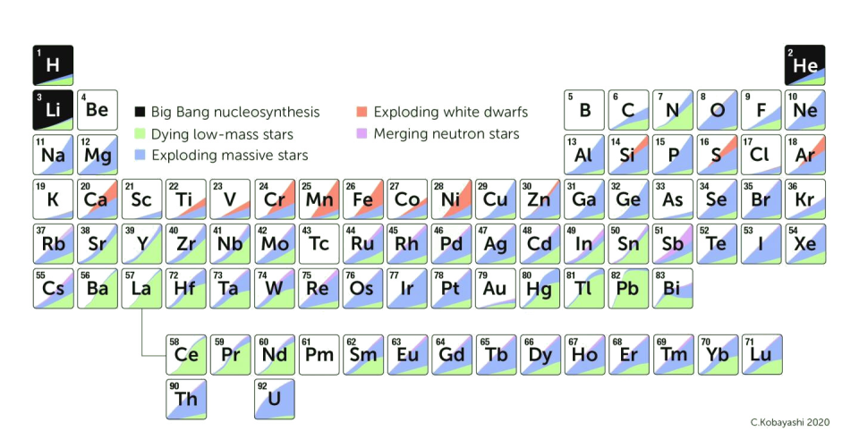
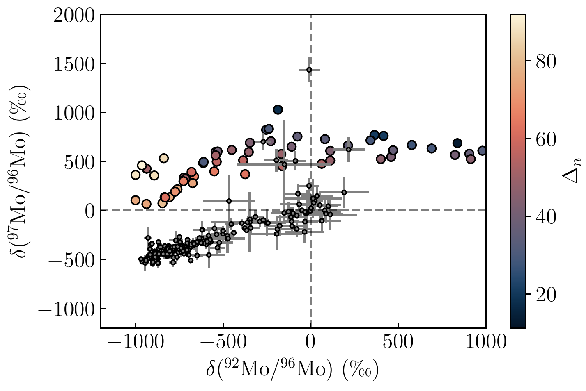
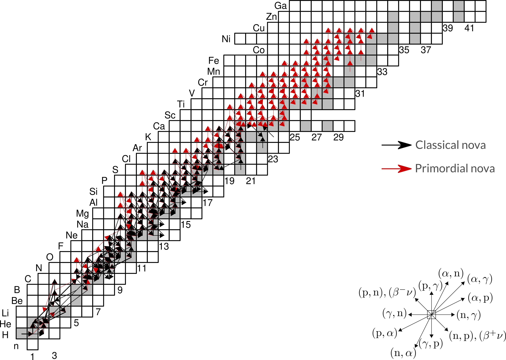
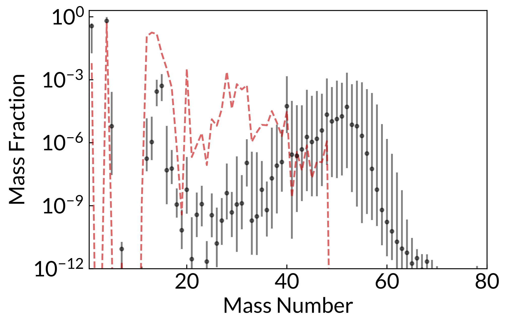

Nuclear astrophysics and the origin of the elements
current projects and future plans
Thanassis Psaltis
Triangle Universities Nuclear Laboratory
psaltis.tha@duke.edu
https://psaltisa.github.io
January 9, 2024
Konkoly Observatory
Image Credit: NASA/CXC/SAO
Happy to see you! 😁
What do I do?
"I use big machines and computers to study how stars that blow up
in space create the stuff we are made of."
Brought to you by: https://xkcd.com/simplewriter/
How did I end up here?
🇬🇷→🇨🇦 → 🇩🇪 → 🇺🇸 → 🤷♂
What are my hobbies?
♟ 📚 🏃♂ 🎮 ️ 🍪
How I see nuclear astrophysics

How do the stars live and die?
What is the origin of the chemical elements?
HD 122563 (DSS2/ Aladin Sky Atlas)
What do the ancient stars show us?
Which are the most favourable
conditions to produce
the light heavy elements in
neutrino-driven outflows?
We formed linear combinations using trajectories of various astrophysical conditions to compare with observations of metal-poor stars.
The case of HD122563
Results for HD122563 using two trajectories
Results using two trajectories for our star sample
Proton-rich conditions are more favourable than neutron-rich
Low entropy and long expansion timescale is preferred
Can isotopic abundances from meteorites reveal neutrino-driven nucleosynthesis signatures?
Secrets in the stardust?

Secrets in the stardust?
What was the output of the first novae explosions?
The first novae explosions
Early in the Galactic history, low- metallicity (Pop III) binaries are thought to produce explosions of an energy release between a supernova and a nova, and elements with A<70 (copper-zinc)
Their reaction flow is similar to a "weak rp-process"
Their output is sensitive to the nuclear physics input
Neutrino-driven nucleosynthesis impact on Galactic Chemical Evolution?

Many successful multi-D ccSN simulations exist!